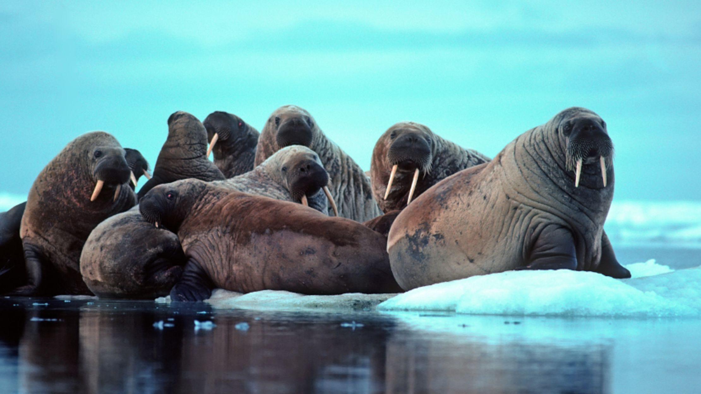

Other Habitats
Click for home page.

The Arctic Habitat
Walrus
Walrus are huge.Walrus aren’t called the Giants or Kings of the Arctic for no reason! Adult walrus are typically about 7.25 to 11.5 feet in size and can weigh up to 1.5 tons (3,000 lbs or 1,360 kg). The weight of a small car! They live up to 40 years in the wildBoth male and female walrus have large tusks. They use their tusks for cutting through ice and getting out of the water, as well as defence and for males, to demonstrate dominance. The larger the tusks, the more dominant the male. Tusks can be as long as 3 feet (0.9 m) for males! Walrus are social animals. They congregate in large numbers, with groups of walrus called “herds”. Herds are usually segregated by gender, with females and males, each having their own herd. Scientists recognize two subspecies of the walrus. The Atlantic walrus and the Pacific walrus are divided geographically. Atlantic walrus inhabit coastal areas of Canada and Greenland, and Pacific walrus are found in the northern seas off Alaska and Russia. The worldwide population of the walrus is estimated at 250,000. Atlantic walrus only make up about 20,000 of the total walrus population.The largest walrus herd in Canada occurs in Foxe Basin. The Foxe Basin herd is approximately 5,000 walrus strong and they can often be seen here lounging in groups on the pack ice. With numerous polynyas (areas of open water surrounded by pack ice), Foxe Basin is a great walrus habitat. With easy access to Foxe Basin from the historic community of Igloolik, Arctic Kingdom travellers can witness the majesty of the mighty walrus on our Kings of the Arctic safari. Orcas and polar bears are their only natural predators. Walrus can withstand freezing temperatures as low as -35°C (-31°F)Layers of blubber stored beneath their skin helps insulate them from the cold. They are also capable of slowing their heartbeat to endure the temperature, allowing them to live comfortably in the Arctic. They live in shallow water but dive deeper in search of food. Walrus can dive up to 90 m and stay underwater for long periods of time – up to 30 minutes! They are also quite graceful in the water and swim at an average speed of 7 km/h (4.35 mph) and up to 35 km/h (21.74 mph).While their vision isn’t great in murky waters, they rely on vibrissae (whiskers) to help them find foods including clams, mollusks, sea cucumbers and more.